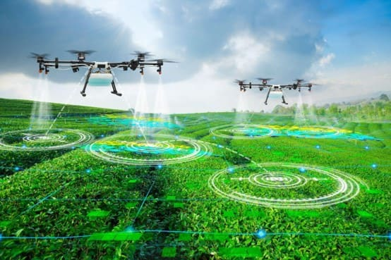

Inteligências Artificiais
Inteligência artifical generativa

Inteligência artificial generativa ou IA generativa é um tipo de sistema de IA capaz de gerar texto, imagens ou outras medidas em resposta a solicitações em linguagem comum.
Funcionamento

O ChatGPT, por exemplo, funciona com a IA Generativa, inteligência artificial que produz novas informações a partir do treinamento que recebe. As IAs são ensinadas com milhares de dados e, assim, criam um padrão de construção, ou um modelo de linguagem, gerando novas informações.
IA's e agricultura
As aplicações de IA na agricultura abrangem robôs agrícolas, tratores autônomos, drones agrícolas, monitoramento da saúde da colheita, reconhecimento facial e sistemas de irrigação automatizados.